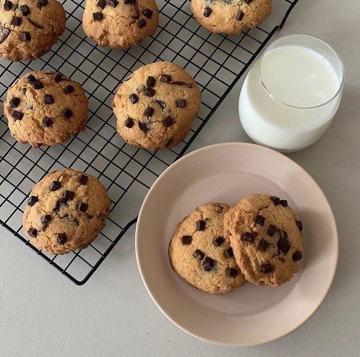
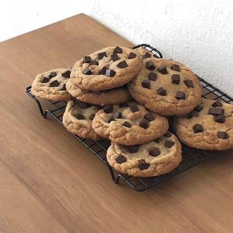
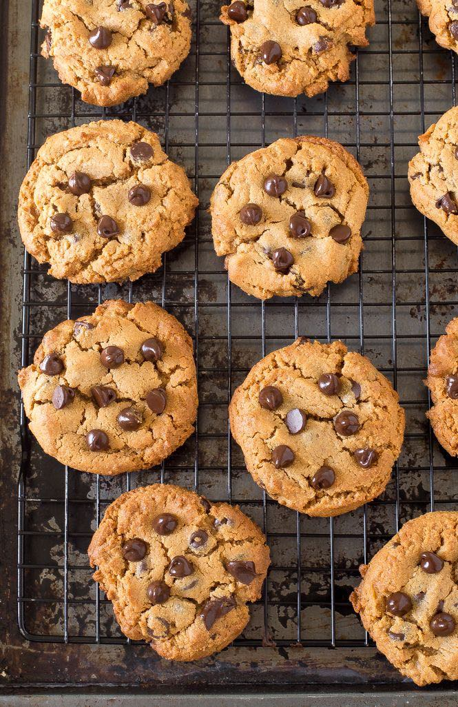
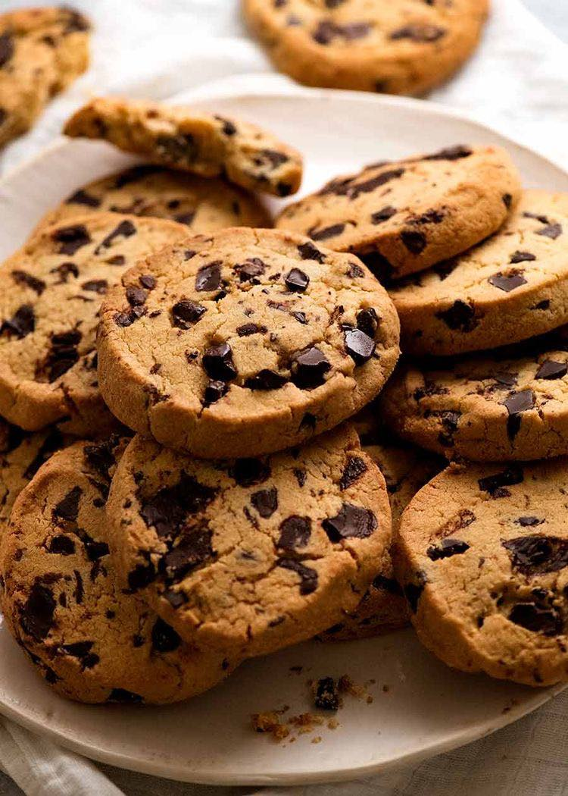

Basic HTML
The Original Chocolate Chip Cookies




Read the recipe carefully and experience the history of this popular cookie.
Ingredients
125 grams of butter
75 grams of brown sugar
85 grams of sugar
1 egg
Baking soda ½ tsp.
150 grams of wheat flour
½ tsp salt
Walnuts (chopped) ½ cup
170 grams of chocolate chips
1 teaspoon vanilla
Method
- Sift the wheat flour, baking soda and salt, set aside.
- Beat the butter with a leaf whisk to soften it. Put both sugars in it.
beat well Gradually add the eggs and vanilla; when well combined, add the dry ingredients and reduce the speed.
- Once well mixed, add chocolate chips and walnuts.
- Scoop the mixture with a teaspoon, form into balls, and place on a tray lined with wax paper.
Then put your hands in some water. Flatten slightly and bake at 190°C for 10 to 12 minutes.
Nutrition Facts
| Nutrition Facts |
| Servings : 4 |
|
| Amount per serving |
|
| Calories |
101 |
|
%Daily Vale |
| Tatal Fat 3.6g |
5% |
| Saturated Fat 0.5g |
3% |